5580C air bag system
- Path
- Descriptions > 55 ELECTRICAL EQUIPMENT > 5580 SPECIAL ACCESSORIES > 5580C air bag system
- Kind
- system description
- Applies to
- all engines; all production periods
- Interactive page
- https://sloeber94.github.io/elrnDB-lYpsln/en/#/2427449
Applies to: all engines; all production periods
INTRODUCTION
The car is fitted with an electronically-controlled safety system which, in the case of a front-end or side crash of medium-high severity activates the safety devices.
The structure of this system is as follows:
- front protection devices;
- side protection devices;
The protection system, known as the SMART BAG 2, consists of protection devices for the front and side occupants, described in the paragraphs which follow.
The Air Bag system components are connected electrically by dedicated wiring, integrated in the dashboard wiring loom for the front devices and side impact sensors, and in the rear wiring loom for the side devices and pretensioners.
The control unit is connected to the system by means of two connectors, one for the front cable and one for the rear cable.
The control unit is not connected to the vehicle CANs and there is a dedicated diagnostic K line.
The passenger's front Air Bag module can be deactivated voluntarily, by a specific key switch located beside the dashboard.
Applies to: all engines; all production periods
COMPOSITION
The system comprises the following devices:
- an electronic control unit;
- dual driver and passenger front Air Bags with dual stage activation
- an additional decentralized ECS impact detection sensor (Early Crash Sensor)
- a manual passenger Air Bag disabling switch,
- two Side Bags on the front seats,
- two side Window Bag modules protecting the heads of the front seat occupants and the rear side seats.
- two side impact sensors fitted in the side pillars;
- two electronic pretensioners on the front seat belts;
To indicate the state of efficiency, the system has:
- fault warning light (red) on the instrument panel;
- passenger Air Bag disabled warning light in the instrument panel;
- diagnostic socket which converses on the K serial line integrated in the EOBD socket to check operation via the EXAMINER
Applies to: all engines; all production periods
ELECTRONIC CONTROL UNIT
The following figure shows the control unit.
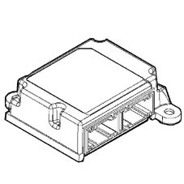
1 - Electronic control unit
Applies to: all engines; all production periods
ELECTRONIC CONTROL UNIT
The control unit represents the central processing unit of the occupant protection system and is fastened securely to the vehicle floor pan near the centre tunnel. It manages all the system detection and activation devices, processing the signals which come from the various sensors around the vehicle and from those fitted inside.
Applies to: all engines; all production periods
COMPOSITION
The control unit contains an electronic deceleration sensor which gives the go ahead for the activation of the safety devices. This sensor comprises two-way accelerometers which make it possible to maximize the operation of the satellite sensors fitted in the centre pillars to ensure the intervention of the side Bags and blinds in the case of a side impact.
Applies to: all engines; all production periods
OPERATION
Frontal crash
Compared with a traditional system, in the case of a frontal impact, the additional deceleration sensor E.C.S. for the Dual Stage system, makes it possible to ensure the optimum reaction times for the safety devices depending on the severity of the impact.
If the signal, processed by the control unit's processor, indicates a crash severity such as to require the intervention of the safety devices involved, the control unit, as the first intervention level, commands the activation of only the pretensioners or, in the case of a more severe impact, the pretensioners and front Air Bags.
The front Air Bags feature dual stage activation. This means that the explosive charges are always both activated, but with an interval between the detonation of the first and second charges which differs depending on the deceleration of the impact: the length of the interval between the explosion of the two charges is inversely proportional to the severity of the impact.
Side impact
Similarly, when there is a side impact, the control unit is capable of recognizing the direction and the intensity, activating the two Air Bags fitted on the side affected by the impact. In order to provide complete cover for side impacts, there are two satellite sensors located in the centre pillars.
When a side impact occurs, the satellite sensors detect the direct crash signal along the car's transversal axis, and send it to the control unit. This signal, processed by a microprocessor inside the control unit, detects the severity of the side impact and decides whether to set off the side Air Bag on the side concerned only if the safety sensor is enabled by the control unit.
The Side Bags (and head bags if fitted) are activated simultaneously and independently of the front safety devices.
After each activation of one of the systems operated (pretensioners, front Air Bags, side Air Bags), the control unit memorises the activation in non-deletable memory and causes the fault warning light on the instrument panel to come on.
Before being replaced, the control unit guarantees the activation of the individual devices within the following limits:
- 3 impacts with activation of the front seat belt pretensioners only;
- 3 impacts in total (left and right) with the activation of the side Air Bags;
- 1 impact with activation of the pretensioners and front Air Bags;
- any combination of the above cases until one of the limits indicated is reached.
If one of the limits described has not been reached, it will be possible, after restoring the operating conditions of the system, to reuse the control unit after carrying out the RESET procedure by means of the EXAMINER. The last activation, corresponding to the maximum number, will prevent further reset conditions.
Applies to: all engines; all production periods
CONTROL UNIT PIN OUT
The diagram below shows the control unit and Pin Out
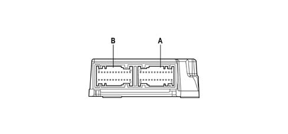
1 - Electronic control unit A - FRONT CONNECTOR B - REAR CONNECTOR
Applies to: all engines; all production periods
CONTROL UNIT PIN OUT
FRONT CONNECTOR
PIN | OPERATION |
|---|---|
A1 | CRASH OUTPUT (N.C.) |
A2 | N.C, |
A3 | N.C. |
A4 | FRONT IMPACT SENSOR ECS |
A5 | PASSENGER BAG DEACTIVATOR + |
A6 | PASSENGER BAG DEACTIVATOR - |
A7 | LINE K |
A8 | POWER SUPPLY KEY-OPERATED |
A9 | PASSENGER SIDE IMPACT SENSOR + |
A10 | DRIVER SIDE IMPACT SENSOR + |
A11 | FAILURE WARNING LIGHT |
A12 | PASSENGER |
A13 | PASSENGER |
A14 | PASSENGER |
A15 | PASSENGER BAG DEACTIVATION WARNING LIGHT |
A16 | EARTH |
A17 | DRIVER'S AIR BAG 2ND STAGE (-) |
A18 | DRIVER'S AIR BAG 2ND STAGE (+) |
A19 | PASSENGER AIR BAG 2ND STAGE (-) |
A20 | PASSENGER AIR BAG 2ND STAGE (+) |
A21 | DRIVER'S AIR BAG 1ST STAGE (-) |
A22 | DRIVER'S AIR BAG 1ST STAGE (+) |
A23 | PASSENGER AIR BAG 1ST STAGE (-) |
A24 | PASSENGER AIR BAG 1ST STAGE (+) |
Applies to: all engines; all production periods
CONTROL UNIT PIN OUT
REAR CONNECTOR
PIN | OPERATION |
|---|---|
R1 | N.C, |
R2 | N.C, |
R3 | N.C, |
R4 | N.C, |
R5 | N.C, |
R6 | N.C, |
R7 | N.C, |
R8 | N.C, |
R9 | FRONT PRETENSIONER DRIVER + |
R10 | FRONT PRETENSIONER PASSENGER + |
R11 | FRONT PRETENSIONER DRIVER - |
R12 | FRONT PRETENSIONER PASSENGER - |
R13 | N.C, |
R14 | N.C, |
R15 | N.C, |
R16 | N.C, |
R17 | DRIVER'S WINDOW BAG + |
R18 | DRIVER'S WINDOW BAG - |
R19 | PASSENGER WINDOW BAG + |
R20 | PASSENGER WINDOW BAG - |
R21 | PASSENGER SIDE BAG + |
R22 | PASSENGER SIDE BAG - |
R23 | DRIVER'S SIDE BAG + |
R24 | DRIVER'S SIDE BAG - |
Applies to: all engines; all production periods
SELF-DIAGNOSIS
The control unit carries out a continuous autodiagnosis of the system operation. In particular:
- it detects and memorizes any faults
- diagnoses the connections with the system components and the possible type of fault;
- it signals the onset of these faults via the special warning light in the instrument panel.
The faults memorised in the control unit may only be deleted after the fault has been repaired using the EXAMINER diagnostic equipment.
Applies to: all engines; all production periods
DRIVER'S AIR BAG MODULE
The figure below shows a view of assembly.
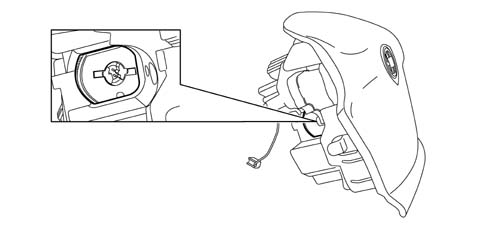
Applies to: all engines; all production periods
SPECIFICATIONS
The Air Bag is a passive safety device made up of a bag which, in the case of a frontal impact, inflates placing itself between the body of the driver and the structure of the front part of the passenger compartment. The Air Bag module is installed in the centre of the steering wheel, and its cover also acts as the horn control.
Applies to: all engines; all production periods
COMPOSITION
The module consists of:
- a plastic cover; which in the case of activation tears in predefined points to allow the bag to expand correctly;
- a bag, with a volume of about 60 litres, made of nylon fabric to minimise skin abrasions in the case of contact, and folded in a particular way so that it inflates gradually and not directly facing the driver;
- a pyrotechnic gas generator;
- a casing.
Applies to: all engines; all production periods
OPERATION
The Bag is inflated by a gas generator which has two intervention stages which can be activated separately depending on the severity of the impact.
The gas generator is activated by means of two electrical resistances which burn the propellant inside the generator allowing the bag to expand. The delayed activation (in the order of thousandths of a second) of the second stage in relation to the first stage makes it possible to adjust the energy used to inflate the Bag. The management of this delay is established by the control unit which, depending on the intensity of the impact, determines both the activation of the first stage and the delay for the activation of the second stage, thereby ensuring optimum energy for the inflation of the Bag. The length of the interval between the explosion of the two charges is inversely proportional to the severity of the impact.
When fully inflated, the cushion is in the optimum position to carry out its function to retain the occupant. The Bag deflates immediately, thanks to an opening in the lower part of the bag. This opening also performs the function of 'softening' the contact between the passenger and the bag preventing the risk of abrasions
Applies to: all engines; all production periods
PASSENGER AIR BAG MODULE
The figure below shows a view of assembly:
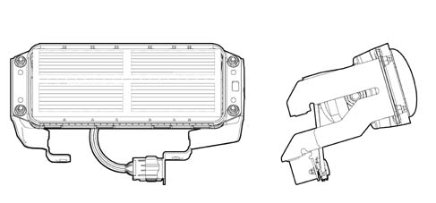
Applies to: all engines; all production periods
SPECIFICATIONS
The passenger Air Bag module is a passive safety device which, in the case of a frontal impact, protects the front passenger, by means of a bag which places itself between the occupant and the dashboard. Unlike the driver's module, this module can be voluntarily deactivated.
Applies to: all engines; all production periods
COMPOSITION
The module consists of:
a metal mounting containing the gas generator and bag;
a bag card cover which, in the case of activation, opens along a pre-cut fracture line, allowing the bag to escape;
a bag, with a volume of about 105 litres, made of nylon fabric in order to minimise skin abrasions in the event of contact, and folded in a particular way so that it does not inflate directly towards the occupant;
a gas generator consisting of a pressurized hybrid gas tank activated by a pyrotechnic charge;
two points of connection to the electrical system;
two mounting brackets on the crossmember;
Applies to: all engines; all production periods
OPERATING
The passenger bag activating logic is identical to that of the driver's bag (see driver's Air Bag).
The inflation of the bag opens the flap incorporated in the dashboard along the predefined cut. When fully inflated, the bag is in the optimum position for carrying out its function of protecting the occupant.
The bag deflates immediately thanks to the presence of the breather openings at the end of the bag.
Applies to: all engines; all production periods
SIDE BAG MODULE
The figure below shows a view of assembly.
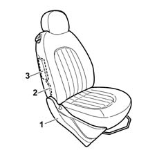
1 - Seat cover 2 - Side Air Bag module (Side Bag) 3 - Supply cable
Applies to: all engines; all production periods
SPECIFICATIONS
To provide maximum protection in the event of side impacts, there are two side Air Bag modules for the front seats installed on the seat squabs, under the cover.
This conformation is considered to be the most efficient as it always enables the Air Bag to be in the optimum position in relation to the occupant, irrespective of the seat adjustment or size of the occupant.
The Side Bag protects the chest region, even if the occupant is not seated correctly, as the dynamics of opening of the bag minimises the risk of damage to the body caused by the impact with the bodyshell.
Applies to: all engines; all production periods
COMPOSITION
The side Air Bag module consists of a metal container holding the gas generator and a nylon bag with a volume of about 11 litres.
The module's container has a card cover which, with the seat squab cover fitted, line up with easy-open sections of seam on the outside of the seat cover.
The module is connected to the electrical system by means of two cables with a yellow coloured outer casing housed, together with the earth connecting cable for the seat, in a protective duct, secured to the seat structure. The two cables end in a yellow connector. The connectors are anchored on a removable mount on the seat base.
Applies to: all engines; all production periods
OPERATION
The gas generator is electrically activated by a signal coming from the electronic control module. Following this siganl, a pyrotechnic charge is triggeed which causes the gases contained in the generator to expand. The gases expand, coming out of specific holes, and inflate the bag. The inflation of the bag causes the backrest cover easy-open sections of seam to give, allowing the correct escape of the bag itself. When fully inflated, the bag is in the optimum position for carrying out its function of protecting the occupant. The bag deflates immediately through the presence of two breather openings.
Applies to: all engines; all production periods
CURTAIN SIDE AIR BAG MODULE (WINDOW BAG)
General view
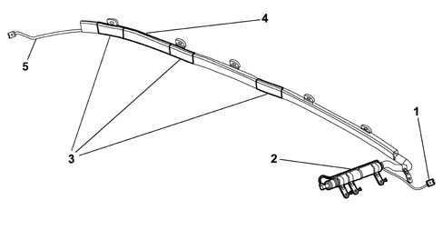
1 - Connector 2 - Gas generator 3 - Bag retaining bands 4 - Bag 5 - Retaining harness
Applies to: all engines; all production periods
SPECIFICATIONS
On all versions of the car, there is a system for protecting the heads of the front and rear side occupants.
The head protection Air Bags (Window Bags), in addition to the Side Bags and front Air Bags, offer the rear seat occupants the maximum possible protection in the event of a crash, protecting the heads of the rear side seat occupants.
Among the different types of Window Bag, the curtain system is the one which offers the best performance thanks to the large area of expansion and its self-supporting capacity, also in the absence of support if the side windows break during the impact.
Applies to: all engines; all production periods
COMPOSITION
The Window Bag module consists of:
- a gas generator secured by appropriate mounting to the car's rear pillar;
- a permeable fabric flexible tube, secured by a band to the gas generator, which diffuses the gas evenly along the whole length of the bag;
- a bag, with a volume of about 34 litres, secured to the gas generator together with the flexible pipe, is made of a nylon permeable fabric and is folded inside a containing sleeve. The bag is designed so that, when inflated, it correctly absorbs the energy of the impact, holding the heads of the occupants an appropriate distance from the impact zone. After inflation, the gas deflates immediately through the porous fabric.
- plastic easy-open clamps for securing the bag to the ceiling longitudinal member;
- a retaining strap, fastened to the front pillar, which holds the inflated bag in position;
- a connector for connection to the electrical system;
Applies to: all engines; all production periods
OPERATING
The gas generator is electrically activated by a signal coming from the electronic control module. Following this siganl, a pyrotechnic charge is triggeed which causes the gases contained in the generator to expand. The gases expand and emerge through specific holes and are distributed evenly along the length of the bag via the flexible pipe, inflating the bag. The increase in volume of the bag causes the retainers to break, the sleeve seams to yield and the finishing trim to open, designed so as to allow the bag to emerge correctly downwards. The correct unfolding of the bag is ensured by a retaining strap, present at the front end of the bag. After completion, the bag is in the optimum position for carrying out its function of protecting the occupant. After inflation, the bag deflates immediately because of the permeability of the fabric.
Applies to: all engines; all production periods
CLOCK SPRING
The diagram below illustrates the clock spring
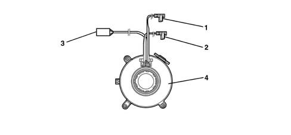
1 - Electrical connection for Air Bag first stage 2 - Electrical connection for Air Bag second stage 3 - Steering wheel electrical functions cable 4 - Watch spring
Applies to: all engines; all production periods
SPECIFICATIONS
The clock spring makes it possible to transfer the electrical signal for the controls on the steering column (horn and other optional services) and connect the AIR-BAG module with danger of breaking.
The device, consisting of two plates is secured by means of the lower plate to the stalk unit, and is joined to the steering wheel by means of specific recesses on the upper plate. The module connecting cables and the horn buttons are wound around inside the two plates allowing them to follow the movement of the steering wheel.
Clock spring PINOUT below:
PIN | PIN FUNCTION |
|---|---|
relay | Negative signal from horn control button |
relay | N.C. |
3 | B-CAN B |
4 | B-CAN A |
5 | Supply controlled by the ignition |
6 | Earth |
7 | N.C. |
8 | N.C. |
9 | Air Bag level 2 (+) |
10 | Air Bag level 2 (-) |
11. | Air Bag level 1 (-) |
12. | Air Bag level 1 (+) |
Applies to: all engines; all production periods
COMPOSITION
The clock spring on the steering wheel has three cables, two of which is for connecting the Air Bag module (first and second stage) and one of which is for connecting the steering wheel electrical functions (horn, radio controls).
On the upper plate, steering wheel side, there is a ring which automatically blocks the rotation between the two plates when the device is removed from the steering wheel.
The new device is supplied with a safety key for transport, to be removed before fitting.
Applies to: all engines; all production periods
OPERATION
Inside the two plates, the connecting cables for the Air Bag module and the various electrical functions are wound in a spiral, with a sufficient number of coils to follow the steering wheel's rotations. The upper plate rotates by means of the recesses present inside the locking ring which fit in the seating on the steering wheel hub. In the working position, the steering wheel presses on the ring, freeing it from the recesses, thus unlocking the rotation between the two plates. When the steering wheel is removed, pushed by a spring, it blocks the rotation between the two plates. This function prevents the top plate, no longer locked to the steering wheel, from turning freely and causing the sprial inside the device to unwind or wind and then possibly break.
In operations involving the removal of the steering wheel and the device, the following must be observed:
- always operate with the wheels lined up straight;
- lock the two plates with a band, for safety reasons, before removing the device from the steering column switch unit.
Applies to: all engines; all production periods
SPECIFICATIONS
Location of front impact sensor ECS
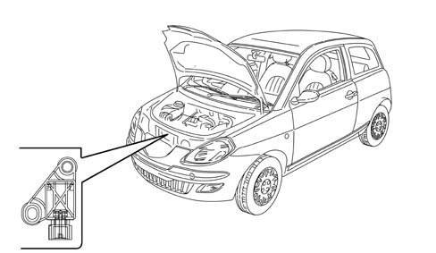
Applies to: all engines; all production periods
SPECIFICATIONS
The ECS additional deceleration sensor (Early Crash Sensor), located near the bonnet lock, assists the main electronic control unit in anticipating the intervention of the Air Bags compared with conventional systems. It also increases the safety level for under body impacts for which the activation of the Air Bags is not requred as there is no risk to the occupants.
Applies to: all engines; all production periods
SIDE IMPACT SATELLITE SENSORS
Location of side impact sensor
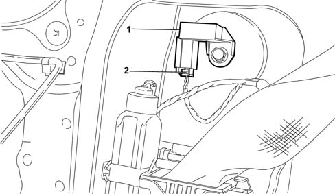
1 - Side impact satellite sensor 2 - Connecting connector
Applies to: all engines; all production periods
SPECIFICATIONS
Apart from the Air Bags, the side protection system also comprises the electronic control module which ensures correct operation. To measure the acceleration resulting from a side impact, there are two satellite sensors installed in the side pillars, containing an accelerometer.
Applies to: all engines; all production periods
COMPOSITION
The side impact satellite sensor consists of a casing containing the acceleration sensor. At the rear of the casing, there is a pin for correct positioning in the seating. On the casing, there is also a connection point for connection to the electrical system.
Applies to: all engines; all production periods
OPERATION
If the acceleration value measured by the sensor in question causes a particular threshold to be exceeded, this information is compared with the measurement obtained from the safing sensor contained in the Air Bag system's electronic control unit. If the values measured are consistent, the control unit causes the activation of the Air Bags on the side affected by the impact.
Applies to: all engines; all production periods
PASSENGER AIR BAG DISABLEMENT KEY SWITCH
The switch with a key for disabling the passenger Air Bag is located at the side of the oddments compartment on the right side of the dashboard as illustrated below:
Applies to: all engines; all production periods
SPECIFICATIONS
The switch, which can be operated using the ignition key, makes it possible to enable (ON) and disable (OFF) the passenger Air Bag module.
In this case the control unit excludes the activation of the passenger Air Bag, but not the operation of the pretensioner (only with the seat belt fastened) and the side bags. This is because if there is a passenger present but the switch has been incorrectly left OFF, the Air Bag will not be activated only the pretensioner.
Deactivation is indicated by a warning light on the control panel.
Applies to: all engines; all production periods
COMPOSITION
The diagram shows a view of the assembly.
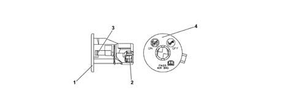
1 - Casing 2 - Switch 3 - Key barrel 4 - Plate
Applies to: all engines; all production periods
COMPOSITION
The unit consists of a casing containing the switch, a key barrel inserted in the casing and held by a clip and a plate which indicates the position assumed by the switch (ON or OFF). On the casing, there is also the seating for the connector to the electrical system.
Any faults in the switch are indicated by the Air Bag system fault warning light coming on.
Applies to: all engines; all production periods
OPERATING
The switch can be operated by the car's ignition switch whenever the activation of the passenger's front module is to be enabled or disabled.
The electronic control unit checks the status of the switch during the normal diagnostic procedure at Key On (four seconds). If the recognised state is OFF, it excludes the module from possible activation, memorises the corresponding signal and causes the passenger Air Bag disabled warning light on the instrument panel to come on. If the recognised state is ON, after the four seconds of the diagnostic procedure the warning light flashes for a further four seconds and then goes out.
The remaining side Air Bags are not affected by deactivation commands.
In the case of faults in the switch, the system ensures the following:
- it does not activate the passenger module
- it causes the Air Bag fault warning light to come on
- it causes the passenger Air Bag disabled warning light to come on
- it memorises the state of deactivation.
Applies to: all engines; all production periods
SPECIFICATIONS
The pretensioners are pyrotechnic devices, electrically activated by a signal coming from the electronic control unit, integrated in the front seat belt winder.
The intervention of the pretensioners in the case of a frontal impact which exceeds a particular threshold, causes any slack in the seat belt to be taken up, thus holding the occupant as closely as possible to the seat squab.
Applies to: all engines; all production periods
OPERATING
The diagram below shows the pretensioner mechanism
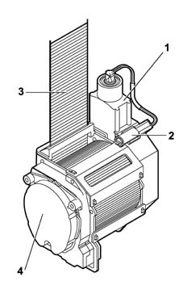
1 - Gas generator 2 - Electrical connector 3 - Belt 4 - Reel
Applies to: all engines; all production periods
OPERATING
The moment the vehicle deceleration is sufficiently high, detected by the system accelerometers, the electronic sensor located in the control unit sends a signal which primes the pyrotechnic charges for the gas generators (6). The burning of the propellant produces a chemical reaction creating inert gas whose pressure creates a force which thrusts the rack pinion upwards, changing the rotary movement of the check to the opposite direction to the unwinding of the belt, rewinding it by a few centimetres.
Applies to: all engines; all production periods
AIR BAG SIGNALLING WARNING LIGHTS
During starting, key in key-on position, the Air Bag system fault warning light (red) comes on for about four seconds (initial self-test stage) and then goes out. If the control unit detects a fault in the warning light, it memorises the corresponding fault code. If no faults are detected in the system at key-on, and there are no fault conditions in the fault memory, the warning light goes out after four seconds of self-test, otherwise it stays on until key off.
The warning light remains on or comes on, during the normal operation of the vehicle, in the following cases:
- the control unit detects a fault in the Air Bag system;
- the control unit detects an impact with activation of the system;
- the control unit detects a fault in the actual warning light connection circuit.
As a result of an impact with the intervention of only the pretensioners or side Air Bags, the warning light stays on until the system's operating conditions are restored (replacement of the component concerned and rest of the control unit using the EXAMINER).
if the impact causes the intervention of the front Air Bag modules, the warning light stays on permanently, and the control unit cannot be reset (in this case the control unit must be replaced).
If internal operating faults arise during the control unit's operating life, and these faults cannot be reset by the EXAMINER, they are indicated by the warning light staying on permanently.
With the key at the key-on position, the passenger's Air Bag disabled warning light (yellow) comes on for about four seconds (initial self-test stage) and flashes for 4 secs. afterwards. If the control unit detects a fault in the warning light, it memorises the relevant fault code, switches on the fault warning light and keeps the passenger's Air Bag module disabled. Restore the system's operation using the EXAMINER, in the same way as for the fault warning light.